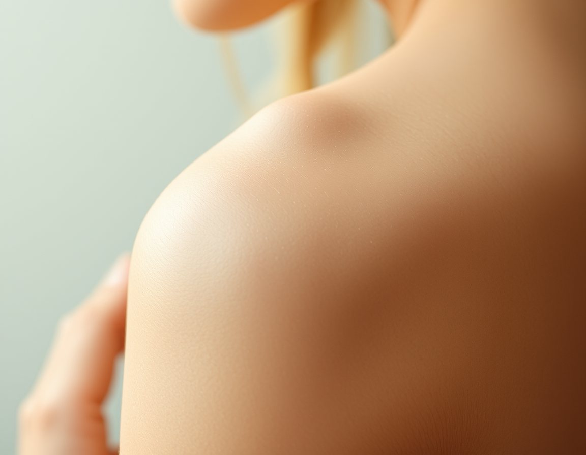
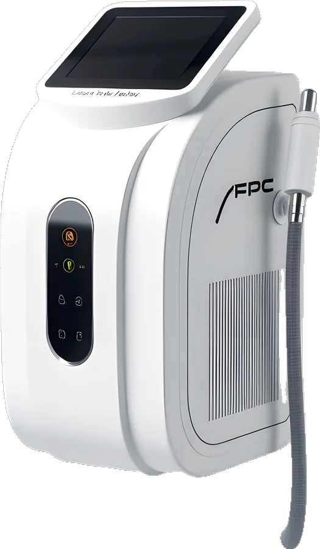
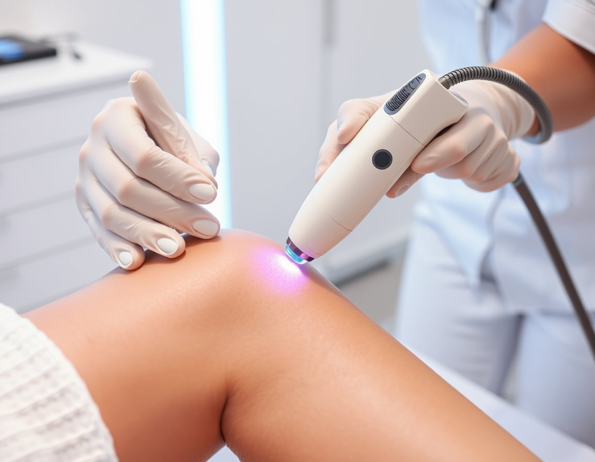
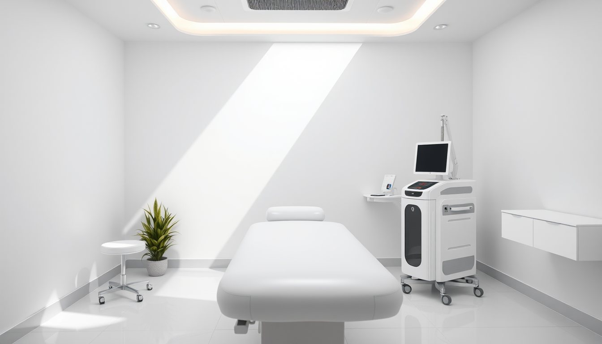

Buz başlıklı diyot lazer, cilt tipinize göre ayarlanan atış ve her seans sonunda yazılı takip. Önce ücretsiz ön görüşme ve deneme atışı.
Çalışma saatleri
Omuz Kol üstü Sırt
Lazer, kıl kökündeki pigmenti hedefler. Kıllar farklı dönemlerde büyüdüğü için seanslar arası 4–8 hafta beklenir.
Cilt ve kıl tipi belirlenir, uygun enerji ayarı seçilir.
Küçük bir alanda test; 48 saat sonra kontrol.


Buz başlık sayesinde çoğu kişi hafif sıcaklık hisseder.
Her seansın ayarı ve bir sonraki tarih kartınıza yazılır.
Tahmini seans sayısı ve süre ortalama değerlerdir; kesin plan ön görüşmede cilt ve kıl tipinize göre yapılır.
15 dakikalık ücretsiz görüşmede cilt tipiniz değerlendirilir, deneme atışı yapılır ve size özel plan yazılı olarak verilir. Hiçbir paket için ön ödeme istemiyoruz.
Ön görüşme ayarlaYapılır; ancak uygulama bölgesinin bronzlaşmamış olması gerekir. Seanslar arasında güneş koruyucu kullanmanızı öneriyoruz.
Bölgeyi bir gün önce tıraş edin; ağda, cımbız ve epilatör kullanmayın. Krem ve deodorant sürmeden gelin.
Lazer pigmenti hedeflediği için sarı, beyaz ve kızıl kıllarda etkinlik düşüktür. Ön görüşmede bunu açıkça konuşuruz.
Sertifikalı uygulayıcılarımız, sorumlu hekim denetiminde çalışır.
Formu gönderin, sizi arayıp uygun saati birlikte belirleyelim.